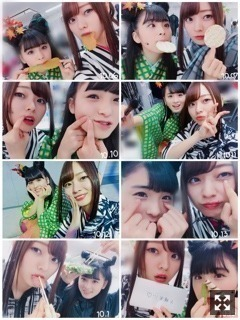
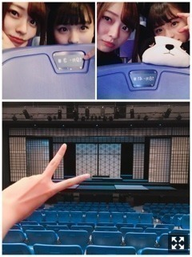
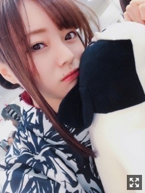

今の気温がすきなんだ〜。梅澤美波
みなさまこんばんは！！
乃木坂46 ３期生の
梅澤美波です！！
(長いですごめんなさい
ムニっとしてる〜
今日はお仕事終わって
でんと牛タン食べたよ〜またかよ〜（笑）
ココ最近ずっと寒いけど
皆様風邪引いてない〜？
元気にしてる〜？？☺︎
寒いのが好きな私からしたらもう最高で
お散歩行きたくなるのよね〜（笑）
雨ばっかで行けてないけど( .. )
寒くなると色々懐かしくなるの）Oo｡.（´-`）（笑）
冬が始まるね〜秋はいつ通り過ぎたのかな〜
最近気づいたら鼻にホクロできてたー！
（笑）
新しい仲間入り( ˙-˙ )౨
舞台『見殺し姫』
先日無事千秋楽まで終えました！
本当に楽しかった！
こんなに楽しいと思えるなんて、
自分が不思議で仕方なかった！
余裕がなかったプリンシパルの時とは違い
楽しんでる自分がいた！
もっと舞台に立ちたいとさえ思った！
初日を迎え安心しました
１２人皆んなやればできる！と。
この作品で本当に良かった。☺︎
演技をしてて涙が出たり
そんなことは縁が遠い事だと思ってました
けど、この作品では違いました！
本当にこのストーリーに惹かれました、演じていて苦しくなることもあるくらい、呑み込まれました。
素敵な方々に囲まれて
素敵なチームでこの舞台を作れて幸せでした！
私自身すごく成長できた期間だった。
色々考えた、悩んだ
もうやるべき事はやろうと決めた期間！
当て書きって本当に有難いなって。
たった数時間の顔合わせで松村さんは一人一人に役を書いてくださったんです。
事細かく自分達のことを話したわけではない、なのに、なにか全て見通されたかのようにすごく一人一人に合ってるんです、驚くくらい。
今回演じた朱雀(すざく)は演じていてすごく気持ちが乗りやすかったです。
朱雀みたいに強くてかっこいい女性になりたいと思いました。( .. )
キツく、強く当たってしまうところもあるけど、本当は心優しい部分があったり、みんなのことを守るために自ら進み出て相手方の側女になったり、、（笑）
朱雀の最後はとても儚かなくて切ないけど、
他の姫を守るために自分を犠牲にする、
そんな強さすごいよね
きっと心の奥になにか抱えながら去って行ったんだろうなあ〜と思ったり。
私がなりたいような強い女性でした、
朱雀を演じられて本当に幸せでした
なにより真剣に見てくださった皆様、
本当にありがとうございました！
私を推してくれてる方は今日はどこにいるんだろう〜と始まる前にずっと考えてた☺︎（笑）
本番だけでなく、稽古から、
本番までの、それまでの過程に意味があると私は思いました！
それをものすごくこの期間学んだ！
本番が全てではない、過程に意味があると！
私はこれが最後だと思いやりました！
舞台なんて中々出来ることではないはず
なのに、私達は２回も経験することができた
もちろん、簡単なことではなくて
ひたすら自分と向き合う時間が必要だし
何が正解かも分からないけど無我夢中で違う"人"を演じることへの難しさと直面して
色々な壁にぶつかったけど
その分得るものは大きかった！
朱雀のように、
みんなを見守られる、みんなのために、
言う時はいう、たまにあるやさしさ、
そんなものを持てるようになるね！
ちょっくらキツくて
性格悪いのかな〜みたいな役だったので
ビビらせちゃったかな？？
怖かった〜？（笑）
怖かったでしょ〜（笑）（笑）
この作品と出逢えて良かった。☺︎

席が隣の梅桃は
毎日写真を撮っておりました☺︎
見納めください( ˙-˙ )౨（笑）
見殺し姫の脚本、監督をしてくださった
松村さんが監督、出演している舞台
『＞(ダイナリィ)』が11.2〜
やられるみたいです☺︎
気になった方、
ぜひ行ってみては？？( ˙-˙ )౨

後ろの方の席までたくさん、
ありがとう。☺︎
梅桃は席で休憩したりしてたよ☺︎
ありがとう。☺︎
全国ツアー新潟公演、
ありがとうございました！！
奥までサイリウム見えていました、
水色×青のサイリウムを探すのに
必死なんだよいつも（笑）
そっちの方まで行ってあげたかったけど、
ごめんね
お米が美味しい！
アットホームな感じがしました、
ラーメンもおいしくて
地方公演は終了致しました！
次は東京ドームです。
私たちがあの場所に立てるのは
先輩方のお力が全てです。
私達が立たせていただくからには
私達の役割があるはず、
その役割を果たせるように！！
広いと思います、
大きく動きます、
今こそ背を活かす時！
見つけてね〜
一緒に帰る？？
（笑）
待ってるみたいだよね、これ☺︎
はやくきて〜待ってるよ〜（笑）
高校はブレザーだったのだけどね、
パーカー禁止で、
カーディガンも黒と紺しかダメだったものだからパーカーとか憧れてたの☺︎
こう見えて半年前まで高校生だったんだよ〜( ¨̮ )（笑）
１９枚目シングル
『いつかできるから今日できる』
発売中です！！
Type-B ｢失恋お掃除人｣ 若様軍団
Type-D ｢僕の衝動｣３期生楽曲
参加させていただいています！
チェックよろしくお願い致します！
質問コーナー◉
Q.握手会でつけてる香水、ハンドクリームはどこの？
A.秘密〜（笑）握手会限定なので秘密にしておきます〜（笑）
Q.身長を伸ばしたいんだけど、どうしたらいい？
A.これ握手会でもすごく聞かれるのだけど、自然と伸びた私からしたら答えられないんだ〜( .. )でも、正座したまま後ろに寝転がってそれを何分間かしてると伸びるって聞いたことがある！
身長縮めたい！って思っていた私からしたらその気持ちすごく分かるけど、今の背の高さでも充分素敵だと思うよ〜そんなに無理して伸ばそうとしなくてもよいと思う◎
Q.秋服どんなの買った？
A.ハイネックのニットやらトップスやらを何着か買いました☺︎あとはパフスリーブのニットとか、グレンチェックのものなど☺︎トレーナー、ブーツも買ったよ〜。まだまだ欲しいのたくさんだよ〜( .. )コートどこの買おうかなあ。
全握のペア組んだ子のファンの方からコメント来てることもあって、皆のこと応援して下さってるんだなと思って嬉しくなる！
ありがとうございます☺︎
先日、まりかさんの個展にお邪魔させていただいてきました！
世界観が物凄く素敵でした、
入った瞬間感じるあの感じ、
足を運んだからこそ分かる
本当に素敵な空間でした。
卒業されるまでの時間、
大切にしたいなって。☺︎
アンダーさんの『My rule』
物凄く好きでタイプの曲すぎて舞台期間毎日聴いてた〜MVも好きだし曲調もすき、、
わーすたさんの新曲MVもカワイイが詰まってて最強！！
先日、ファンレター頂きました！
(まだ届いてない分もあります、、)
ありがとうございます☺︎
きっと皆様が手紙を出してから手元に届くまで時間はかかってしまうけど、全部読ませていただいてるよ。☺︎
色々な便箋があって、
色々な場所から届いていて、
嬉しいです、みんな色々な場所から応援してくれてるんだなって。☺︎
握手会での私の言葉で頑張れたとか
そういうのって物凄く嬉しい！
皆様に影響を与えられているなら
私は頑張っている意味があると思えます！
ありがとう！これからもよろしくね☺︎
ある日舞台終わって
与田が可愛くて愛おしすぎたので
ギューってしてました( ¨̮ )（笑）
なんて可愛いんだ〜って思う( ¨̮ )
写真集楽しみだな〜☺︎☺︎
与田〜写真集買ったらサインしてね〜
と言ったら
全ページにしてあげる♡
と言われました（笑）
本当かな〜いいだろ〜（笑）
モバメしたいなあ、
いつ始まるんだろう、わくわく
載せたい写真やら沢山あるので
送る先がほしいなあ☺︎
報告したいお知らせもいくつかあるので
もうちょいお待ちを〜

朱雀姉さんです
（笑）
夢で逢おうな〜約束な〜（笑）
何事もへこたれないこと！
失敗した事があるならもうそれは絶対に繰り返してはいけないなと、
その失敗があるからこそ気づけることもあるけどね。☺︎
今週もお仕事学校バイトみんながんばろな〜
Original：https://www.nogizaka46.com/s/n46/diary/detail/41493?ima=0520&cd=MEMBER